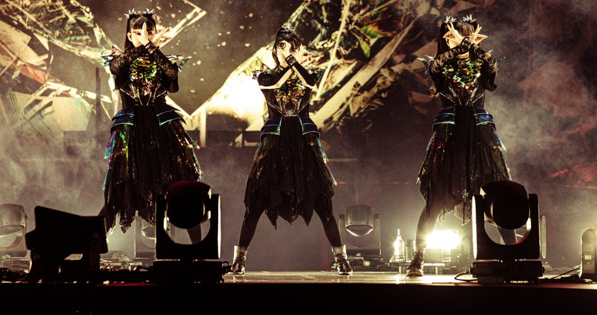

The FOX GOD has instructed us to help spread awareness and to help bring THE ONE together! We aim to help spread the message of the FOX GOD and help out our METATOMO's across the world to enlighten them on when and where we can support the newly reborn Metal Spirits in their mission of Metal!

BABYMETAL exists as a divinely guided force within the "Metal Resistance", a movement ordained by the FOX GOD to spread a new form of music-Kawaii Metal-across the globe. Rather than being portrayed as ordinary performers, the members are chosen vessels carrying out a prophetic mission that blends heavy metal with j-idol energy.
At the center stands SU-METAL, the Queen of Metal, whose angelic voice channels the will of the FOX GOD. Alongside her is MOAMETAL, a guardian who embodies joy, connection and the bond between the group and us, "THE ONE".
Standing with them is MOMOMETAL, who helped SU and MOA in their earlier days as an Avenger of Metal. Restoring the third pillar of the group, MOMOMETAL symbolizies rebirth and continuity within the Metal Resistance. Her presence is often interpreted as the completion of a new cycle, reinforcing themes of regeneration and evolution that define BABYEMETAL's later narrative phrases.
Together, the trio represesnts a unified front chosen by the FOX GOD to carry the message of metal into a new age. Their live performances function as ritual gatherings rather than conventional concerts, where fans become part of "THE ONE" through chants, synchronized dances, and collective energy. Supporting them is the Kami Band, portrayed as divine musicians sent by the FOX GOD, whose masked and otherwordly appearance emphazizes their role as supernatrual agents of metal.
Each album unfolds as a chapter in an ongoing prophecy, chronicling BABYMETAL's journey from revelation to global expansion and into new conceptual realms, ultimately framing the group as a mythic force where music, ritual, and narrative are inseparably interwined.